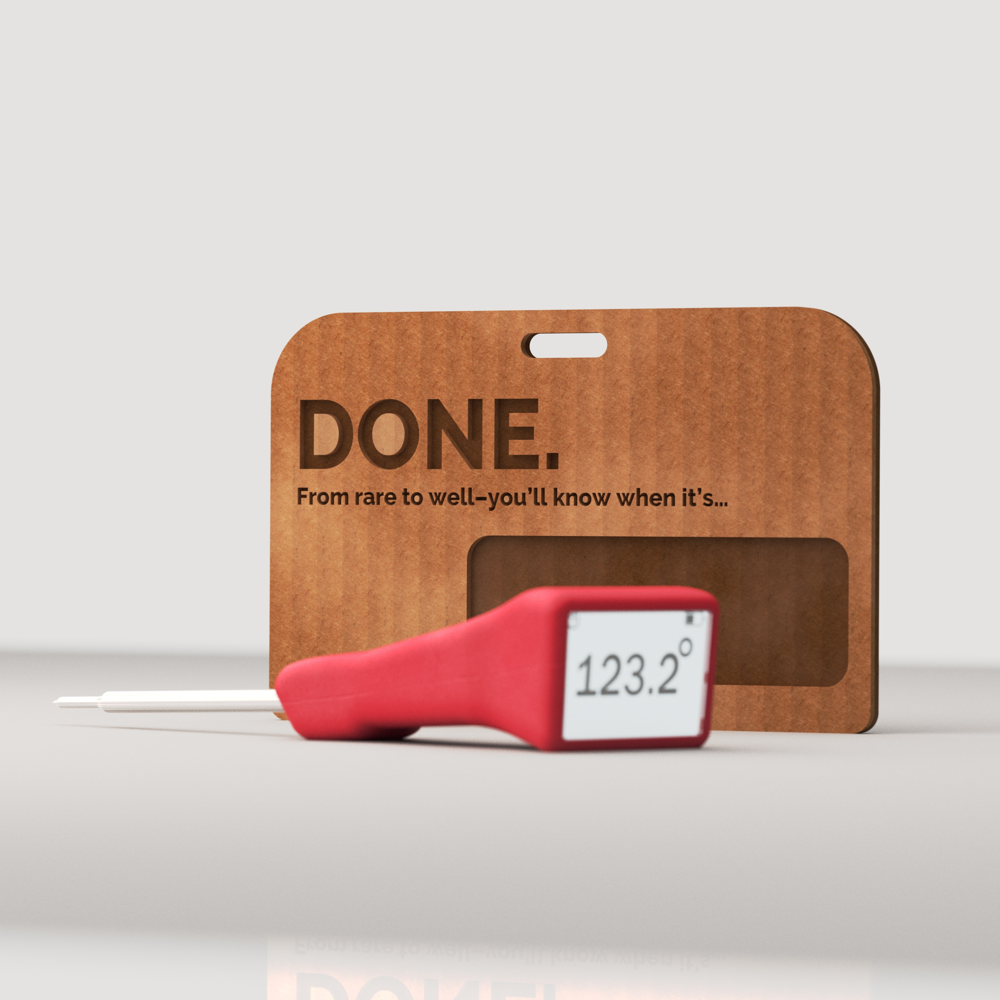
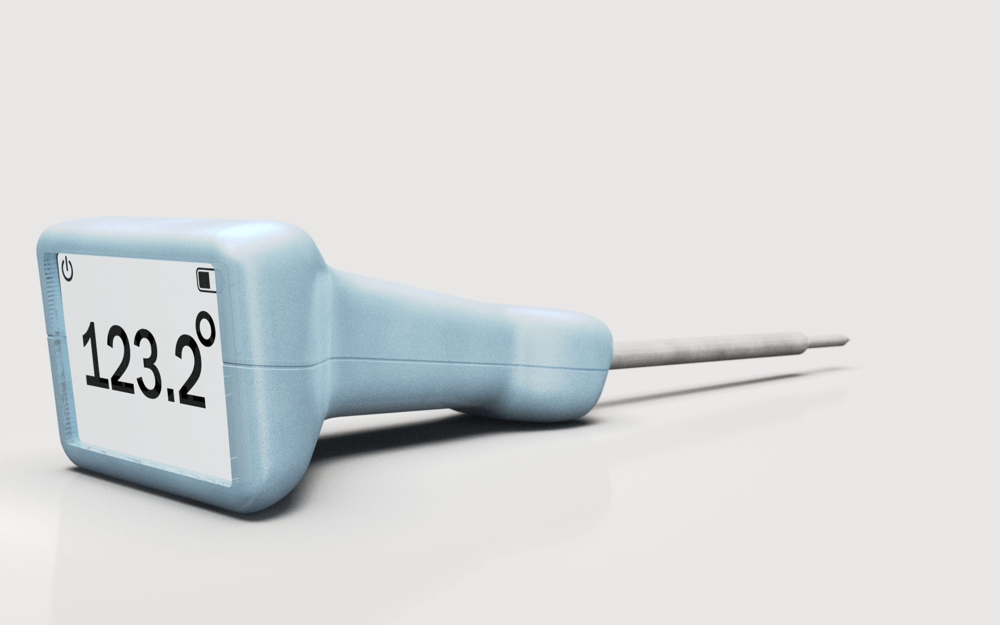

The product's whole job is to tell you one thing. So it says it loudly.
first
The Problem
Meat thermometers are utility objects masquerading as tools. Most are clinical, forgettable, and designed to disappear into a drawer. But the moment of using one — standing at the grill, checking the roast — is a moment of anticipation. The product should match the energy of that moment.
The insight was direct: if the product's only job is to tell you one thing, it should say that thing loudly. The name writes the brief. DONE.

The moment of use — standing at the grill, checking the roast
Sketching
Explored a wide range of handle concepts through sketching — clip-on forms, probe-forward layouts, pistol-grip ergonomics, rotating display heads. The goal was to exhaust the space before committing to a direction.
The sketch spread moved quickly from utility shapes toward something more considered: an ergonomic handle with a distinctly large, face-forward display and a gentle angled geometry that reads the temperature clearly whether the thermometer is upright or flat on a surface.

Sketch spread — from utility shapes to considered ergonomic form

Display geometry iterations — face-forward, angled, rotating
The sketch spread moved quickly from utility shapes toward something more considered.
Resolving Form in Hand
Before committing to SolidWorks, built multiple foam handle models to test shape, feel, and ergonomics in hand. This stage was critical — the final handle geometry came directly from foam, not from a screen.
The ergonomic waist, the angular transition to the display head, the balance point — all resolved in foam first. The foam models answered questions a screen can't: how does it feel at the grill? Does the display read naturally from above? Is the probe angle comfortable when set flat on a counter?

Early iterations — scale, grip width, display head proportion

Variations in hand — ergonomic waist and balance point tested directly
The final handle geometry came directly from foam, not from a screen.

Final foam model — ergonomic waist and angular head transition resolved

The shape that became SolidWorks geometry — carved, then measured
Parallel Track
Packaging was prototyped in parallel with the product form using kraft cardboard hang cards. Multiple iterations tested the window cutout size and shape, the hang hole proportion, and the "DONE." branding placement.
The final packaging uses a warm kraft card with laser-etched typography — premium but approachable. The same legibility logic that drives the product's display face runs through the package: the name is the largest thing on it.

Multiple cardboard iterations — window cutout, hang hole proportion, branding placement

Physical prototypes — kraft hang cards tested for proportion and feel

Final packaging render — warm kraft, laser-etched type

Back panel — minimal, legible at shelf distance

Window cutout proportion — resolved across four cardboard iterations

Final packaging — kraft, laser-etched, retail and gift ready

Packaging in context — designed for point-of-sale and gift
DONE.
A digital probe thermometer with a large, square face display, ergonomic handle in five colorways, and a kraft hang-card package. The display shows temperature at a glance; the handle fits naturally in hand whether gripping it at the grill or setting it flat on a counter.
The foam modeling phase made a better product than going straight to CAD would have. The final handle shape looks simple, but it's the result of carving and sanding until it felt right — then translating that back into geometry. That process is worth showing.

Five colorways — red, pink, taupe/grey, teal, mint

Exploded view — body shell · PCB + screen · display lens · steel probe

Handle detail — the ergonomic waist resolved in foam, not SolidWorks


Probe detail — stainless steel, for grill and oven

Product and package together — one legibility system, two touchpoints